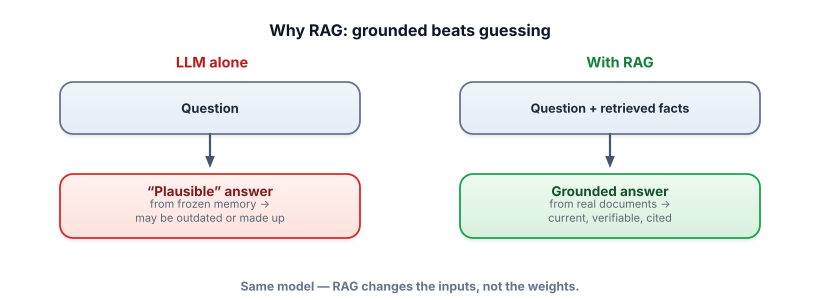
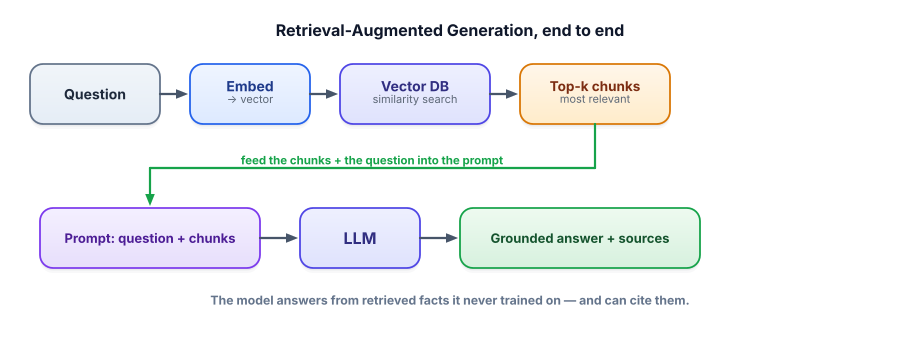

Why RAG exists
This is the technique that turns a general-purpose model into your expert — answering from your documents, your policies, today’s data — with citations you can check. It’s the single most common architecture in production GenAI, and it’s built entirely from things you already understand.
The problem RAG solves
From Track 1 you know three hard limits of a bare LLM: it has a knowledge cutoff, it can’t see your private data, and when it doesn’t know something it hallucinates a confident guess. So how do you build a support bot that answers from your help docs, or an assistant that knows this week’s numbers? You can’t retrain the model for every change, and you can’t fit a 500-page manual into one prompt. The answer is to stop relying on the model’s memory and instead fetch the relevant facts and hand them to the model at question time.

Retrieval-Augmented Generation (RAG) is a pattern where, for each query, you retrieve the most relevant pieces of text from a knowledge source and put them in the prompt, so the model generates its answer grounded in those pieces. The collection of source text is your knowledge base. Grounding means the answer is based on supplied evidence rather than the model’s memory. Retrieval is the act of finding the relevant pieces — which, as you’ll see, is just the embedding similarity from Track 1.3 at scale.
A bare LLM is a student taking a closed-book exam: it answers from memory, and when memory fails it bluffs. RAG turns it into an open-book exam where a librarian hands the student the three right pages before each question, and the student must point to the line they used. The analogy breaks because a real librarian understands the question; the retriever only matches meaning numerically, so it can hand over the wrong pages with full confidence.
How it works, at a glance
The whole pattern is one loop: turn the question into a vector, find the nearest chunks in a vector store, paste them into the prompt, and let the model answer from them.

This is a complete, runnable RAG system using a free embedding model and a free local LLM. We’ll reuse and grow it across the track.
!pip install sentence-transformers numpy ollama
import numpy as np, ollama
from sentence_transformers import SentenceTransformer
embed = SentenceTransformer("all-MiniLM-L6-v2") # free, 384-dim
# 1) knowledge base — your chunks of text
docs = [
"The X200 blender has a 3-year limited warranty.",
"Returns are free within 30 days of delivery.",
"The X200 motor is rated at 1200 watts.",
]
D = embed.encode(docs, normalize_embeddings=True) # pre-embed once
def retrieve(q, k=2):
qv = embed.encode([q], normalize_embeddings=True)[0]
scores = D @ qv # cosine (vectors are unit-length)
top = scores.argsort()[::-1][:k] # highest first
return [docs[i] for i in top]
def rag(q):
chunks = retrieve(q)
context = "\n".join(f"[{i+1}] {c}" for i, c in enumerate(chunks))
prompt = ("Answer ONLY from the context. Cite as [n]. "
"If the answer isn't there, say you don't know.\n\n"
f"Context:\n{context}\n\nQuestion: {q}")
return ollama.chat(model="qwen2.5:7b",
messages=[{"role": "user", "content": prompt}])["message"]["content"]
print(rag("How long is the warranty?")) # -> "The warranty is 3 years [1]."That’s genuinely it — retrieval is one matrix multiply (cosine), generation is one grounded prompt. Everything else in this track makes these two steps robust at real scale.
Assumptions: 40,000 policy and product documents, about 2,500 tokens each, 50,000 questions a day, model priced at $2 per million input tokens and $10 per million output (claude-sonnet-5-5 list price, Anthropic models overview, checked 2026-11-03).
- Size the knowledge. 40,000 x 2,500 = 100 M tokens. The model's window is 1 M tokens, so "paste it all in" is not even possible: the corpus is 100 times the window.
- Pretend it fit anyway. A 1 M-token prompt costs 1 x $2 = $2 per question. At 50,000 questions that is $100,000 a day, before output.
- Now RAG. Retrieve 8 chunks of 400 tokens = 3,200 tokens, plus about 300 tokens of instructions and question = 3,500 input tokens. 3,500 / 1,000,000 x $2 = $0.007 per question, or $350 a day.
- Output is the same either way. 300 output tokens x $10 / 1 M = $0.003 per answer, $150 a day.
- Freshness. Say 500 documents change each week. You re-chunk and re-embed only those: 500 x 2,500 = 1.25 M tokens through a free local embedder. With fine-tuning you would retrain; with RAG you re-index a sliver.
Result: RAG is about $500 a day all-in against an impossible (or $100,000) long-context design, and every answer can cite the policy it came from. The catch, which the rest of this track handles, is that the bot is now only as good as the 8 chunks it fetched.
When to use RAG (and when not to)
RAG is the right tool when you need a model to use knowledge that is large, changing, private, or must be cited. But it’s one of three ways to give a model knowledge, and a senior engineer picks deliberately:
| Approach | Best for | Watch out |
|---|---|---|
| Long context (paste it all in) | A handful of small docs that fit comfortably in the window | Cost, latency, “lost in the middle” at scale (Track 1.4) |
| RAG (retrieve, then generate) | Large/changing/private knowledge; you want citations | Quality is capped by retrieval quality (Lesson 3.8) |
| Fine-tuning (train the weights) | Durable behavior, format, or style — not fast-changing facts | Costly to update; wrong tool for fresh knowledge (Track 5) |
RAG is for knowledge; fine-tuning is for behavior. If the question is “how do I make it know X?”, reach for RAG. If it’s “how do I make it act like X?”, consider fine-tuning. Most “make it answer about our docs” problems are RAG.
- RAG fixes the LLM’s cutoff/private-data/hallucination limits by supplying relevant facts at query time.
- The loop: embed the query → retrieve nearest chunks → put them in the prompt → generate grounded.
- It changes the input, not the weights — so updating knowledge is just re-indexing.
- Choose among long-context, RAG, and fine-tuning: RAG for large/changing/private/cited knowledge.
- RAG’s ceiling is retrieval quality — if the right chunk isn’t fetched, the answer can’t be right.
Your company’s product catalog changes weekly. You need a bot that answers questions about current products, with sources. Best approach?
What core problem does RAG solve that a bigger model alone doesn't?
A teammate says: "Our new model has a 1 M-token window, so we can drop RAG and paste the whole 100 M-token knowledge base." What is the best reply?
1. Run the “hello world” RAG above, then ask it “What’s the motor wattage?” and “Do you ship to Mars?” What should each return, and why?
2. For each, pick long-context / RAG / fine-tune: (a) answer from a 2-paragraph email, (b) answer from 10,000 support articles, (c) always reply in your brand’s quirky voice.
3. Explain why RAG can cite sources but a bare LLM fundamentally cannot.
▸ Show solutions & reasoning
1. “Motor wattage” retrieves chunk [3] and answers “1200 watts [3].” “Ship to Mars?” retrieves the nearest chunks, but none contain shipping-to-Mars info, so a well-grounded model says “I don’t know” (because you told it to abstain when the answer isn’t in context). That contrast — confident when grounded, honest when not — is the whole value of RAG.
2. (a) long context — it’s tiny, just paste it. (b) RAG — far too much to paste; retrieve the relevant few. (c) fine-tune — that’s a durable behavior/style, not knowledge, so train it in (or a strong system prompt for a lighter touch).
3. Citations require knowing where a fact came from. A bare LLM generates facts from diffuse patterns in its weights — there’s no source to point to, so any “citation” it offers is itself generated (and often fake). RAG retrieves specific, identifiable chunks, so the system knows exactly which document each fact came from and can attach a real reference. Provenance comes from retrieval, not generation.
The seductive thing about RAG is how simple the core is — embed, search, stuff, generate. The reason it’s a discipline is that quality lives in the unglamorous parts around the model. Your answer can only be as good as the chunk you retrieved, which depends on how you split documents (Lesson 3.2), which embedding model you chose (3.3), how your index trades speed for accuracy (3.4), whether you rerank (3.5) or blend keyword and semantic search (3.6), and how strictly you ground and cite (3.7). And you won’t know any of it is working without measuring retrieval and answer quality (3.8). That’s the whole track.
A useful way to hold it: RAG moves the hard problem from “does the model know?” to “can I find the right text?” — and finding the right text is a search-and-data problem you can engineer, test, and improve incrementally. That’s a much better place to stand than hoping a model memorized your docs. The model becomes a reliable reasoner over evidence you control, which is exactly the relationship you want with a system that’s brilliant but an unreliable witness.
labs/03_rag_local.pyFree and offline once set up: Ollama with qwen2.5:7b, plus the packages in labs/README.md. From the course folder:
python labs/03_rag_local.pyWhat to look for: Run the lab end to end and find the grounded answer with its [doc-id] citations, then ask a question the corpus cannot answer and watch the refusal fire because the top retrieval score falls below the threshold. That pair (cited answer, honest refusal) is the whole promise of this lesson. Delete the relevant document from the corpus and rerun: the same question should flip from answered to refused, which shows the answer came from retrieval, not from the model's memory.
Small samples: these labs use 5 to 20 cases so they run in minutes on a laptop. Where they report a rate, they print n and a 95% Wilson interval. Read them as a demonstration of the mechanism, not as a measured rate for your system; for that you need hundreds of cases and several seeds.
▸ Recorded output (our run, 2026-11-03, qwen2.5:7b on a laptop GPU)
out of the top 3. On this tiny corpus dense already wins; hybrid earns its keep on big corpora full of
near-identical codes (SKUs, error ids) that embeddings blur. Never assume: measure hit@k (lab 06).
5) Grounded answers with citations, and a refusal when retrieval is weak
Q: I was charged twice for one order. What happens now?
A: If you were charged twice for one order, the duplicate payment is reversed automatically within 3 business days [pay-01#0]. If it is not reversed after 3 business days, raise a billing ticket with both transaction ids.
citations=['pay-01#0'] all-cited-ids-were-retrieved=True
Q: Can I change my delivery address after the order has shipped?
A: No, you cannot change your delivery address after the order has shipped. According to [ship-03#0], the address can only be changed before the order is packed.
citations=['ship-03#0'] all-cited-ids-were-retrieved=True
Q: Do you deliver to Antarctica by drone?
A: I don't know based on our policies. (refused before calling the LLM: best cosine 0.27 < 0.35)
citations=[] all-cited-ids-were-retrieved=True
Look: every factual sentence carries an id you can check; the off-topic question is refused
cheaply by the retrieval threshold, so the model never gets a chance to make something up.Your numbers will differ a little run to run. Full log: labs/outputs. Source: labs/03_rag_local.py.
Warm-up. Write the four steps of the RAG loop for one query, naming what goes in and out of each step.
▸ Solution
- Embed the query: text in, one vector out (same model as the documents).
- Retrieve: query vector in, top-k chunk ids plus scores out.
- Build the prompt: numbered chunks, instructions (answer only from context, cite, abstain), and the question.
- Generate: prompt in, answer with citations out.
Transfer. An HR team has 30 policy PDFs (about 90,000 tokens in total) that change twice a year, and wants answers with page references. A colleague proposes a full vector-database RAG stack. Is that the right call?
▸ Solution
Probably not at first. 90,000 tokens fits comfortably in a 1 M-token window, so the simplest version is long context: paste all 30 PDFs with page markers and ask for page citations. Do the cost check: 90,000 tokens x $2 per million = $0.18 per question on a $2/M model, so at 2,000 questions a month that is $360 a month, and prompt caching can cut repeated-prefix cost further. Move to RAG when (a) the corpus grows past what is cheap to paste, (b) questions get frequent enough that $0.18 each hurts, or (c) quality suffers from lost-in-the-middle. The senior point: RAG is a tool for large or fast-changing knowledge, not a default.
Stretch. Your RAG bot answers "What is the overdraft fee?" with "$35 [2]", but chunk [2] says the fee is $25. List every place in the pipeline this could have gone wrong and the one check that tells you which.
▸ Solution
Candidates: (1) Generation blended chunk [2] with the model's prior (a common US fee figure), (2) stale index: the document changed to $25 but another chunk still says $35 and the model cited the wrong number, (3) chunking split a table so the $35 belongs to a different product row, (4) citation slip: the claim came from chunk [3] but was tagged [2]. The deciding check is to print the full prompt that was sent (all chunks) and search it for "$35". If $35 is nowhere in the context, it is a faithfulness failure in generation: tighten grounding and add a claim-vs-source check. If $35 is in some chunk, it is a data problem (stale or mis-chunked content) and the fix is upstream. Logging the exact retrieved context per answer is what makes this a two-minute diagnosis instead of a guessing game.
Junior What is RAG and why would you use it instead of just asking the model?
▸ Model answer
RAG, retrieval-augmented generation, fetches relevant passages from your own data at question time and puts them in the prompt, so the model answers from evidence instead of memory. You use it because a bare model has a training cutoff, has never seen your private documents, and guesses when it does not know. RAG fixes all three: the knowledge is current because you re-index when documents change, private because it lives in your store, and checkable because each answer can cite the passage it used. It changes the model's input, not its weights, so updating knowledge is cheap.
Mid How do you decide between long context, RAG and fine-tuning for a new use case?
▸ Model answer
I ask what kind of thing the model is missing. If it is knowledge that is small, I paste it (long context) because it is simplest. If it is knowledge that is large, changing, private or must be cited, I use RAG. If it is behaviour (a format, a tone, a classification style) I consider fine-tuning, or first just a strong system prompt and few-shot examples. Then I do the arithmetic: corpus tokens against the context window, tokens per call times call volume times price, and how often content changes. Often the answer is a mix: RAG for facts plus a light fine-tune or prompt for style.
Senior A RAG prototype looks great in demos but users complain it is wrong 20% of the time. How do you run the investigation?
▸ Model answer
First I stop changing things and build a labeled set: 200 to 300 real user questions, each with the passage that should answer it and a reference answer. Then I split the failure in two. Retrieval metrics (recall@k, MRR) tell me whether the right passage reached the prompt; generation metrics (faithfulness, answer relevance) tell me whether the model used it. If recall is low I work on chunking, embeddings, hybrid search and reranking. If recall is high but faithfulness is low I work on grounding, context order and citation checks. I also slice by query type, because the 20% is usually concentrated: identifiers, multi-hop questions, or stale documents. Every fix goes through the same eval before it ships.
- Lewis et al., Retrieval-Augmented Generation for Knowledge-Intensive NLP Tasks (2020) - arXiv
- Liu et al., Lost in the Middle: How Language Models Use Long Contexts (2023) - arXiv
- Gao et al., Retrieval-Augmented Generation for Large Language Models: A Survey (2023) - arXiv
- Models overview and pricing - Anthropic docs
The first lever on retrieval quality is how you cut your documents into pieces. Get this wrong and nothing downstream can save you. Next: chunking strategies.